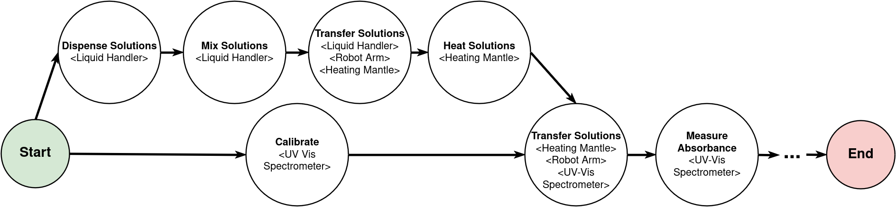

Protocols#
Protocols are a set of tasks that are executed in a specific order. Protocols are represented as directed acyclic graphs (DAGs) where nodes are tasks and edges are dependencies between tasks. Tasks part of a protocol can pass parameters, devices, and resources to each other using EOS’ reference system. Task parameters may be fully defined, with values provided for all task parameters or they may be left undefined by denoting them as dynamic parameters. Protocols with dynamic parameters can be used to run campaigns of protocol runs, where an optimizer generates the values for the dynamic parameters across repeated protocol runs to optimize some objectives.

Above is an example of a possible protocol that could be implemented with EOS. There is a series of tasks, each requiring one or more devices. In addition to the task precedence dependencies with edges shown in the graph, there can also be dependencies in the form of parameters, devices, and resources passed between tasks. For example, the task “Mix Solutions” may take as input parameters the volumes of the solutions to mix, and these values may be output from the “Dispense Solutions” task. Tasks can reference input/output parameters, devices, and resources from other tasks.
Protocol Implementation#
Protocols are implemented in the protocols subdirectory inside an EOS package
Each protocol has its own subfolder (e.g., protocols/optimize_yield)
There are two key files per protocol:
protocol.ymlandoptimizer.py(for running campaigns with optimization)
YAML File (protocol.yml)#
Defines the protocol. Specifies the protocol type, labs, and tasks
Below is the protocol YAML file for the color mixing example.
It uses a color_station device that handles both mixing and analysis, a robot_arm for moving containers,
and a cleaning_station for cleanup:
protocol.yml
type: color_mixing
desc: Protocol to find optimal parameters to synthesize a desired color
labs:
- color_lab
tasks:
- name: retrieve_container
type: Retrieve Container
desc: Get a container from storage and move it to the color dispenser
duration: 5
devices:
robot_arm:
lab_name: color_lab
name: robot_arm
color_station:
allocation_type: dynamic
device_type: color_station
resources:
beaker:
allocation_type: dynamic
resource_type: beaker
dependencies: []
- name: mix_colors
type: Mix Colors
desc: Mix the colors in the container
duration: 20
devices:
color_station: retrieve_container.color_station
resources:
beaker: retrieve_container.beaker
parameters:
cyan_volume: eos_dynamic
cyan_strength: eos_dynamic
magenta_volume: eos_dynamic
magenta_strength: eos_dynamic
yellow_volume: eos_dynamic
yellow_strength: eos_dynamic
black_volume: eos_dynamic
black_strength: eos_dynamic
mixing_time: eos_dynamic
mixing_speed: eos_dynamic
dependencies: [retrieve_container]
- name: analyze_color
type: Analyze Color
desc: Analyze the color of the solution in the container and output the RGB values
duration: 2
devices:
color_station: mix_colors.color_station
resources:
beaker: mix_colors.beaker
dependencies: [mix_colors]
- name: score_color
type: Score Color
desc: Score the color based on the RGB values
duration: 1
parameters:
red: analyze_color.red
green: analyze_color.green
blue: analyze_color.blue
total_color_volume: mix_colors.total_color_volume
max_total_color_volume: 300.0
target_color: eos_dynamic
dependencies: [analyze_color]
- name: empty_container
type: Empty Container
desc: Empty the container and move it to the cleaning station
duration: 5
devices:
robot_arm:
lab_name: color_lab
name: robot_arm
cleaning_station:
allocation_type: dynamic
device_type: cleaning_station
allowed_labs: [color_lab]
resources:
beaker: analyze_color.beaker
parameters:
emptying_location: emptying_location
dependencies: [analyze_color]
- name: clean_container
type: Clean Container
desc: Clean the container by rinsing it with distilled water
duration: 5
devices:
cleaning_station: empty_container.cleaning_station
resources:
beaker: empty_container.beaker
parameters:
duration: 2
dependencies: [empty_container]
- name: store_container
type: Store Container
desc: Store the container back in the container storage
duration: 5
devices:
robot_arm:
lab_name: color_lab
name: robot_arm
resources:
beaker: clean_container.beaker
parameters:
storage_location: container_storage
dependencies: [clean_container]
Let’s dissect this file:
type: color_mixing
desc: Protocol to find optimal parameters to synthesize a desired color
labs:
- color_lab
Every protocol has a type. The type is used to identify the class of protocol. When a protocol is running then there are instances of the protocol (protocol runs) with different IDs. Each protocol also requires one or more labs.
Now let’s look at the first task in the protocol:
- name: retrieve_container
type: Retrieve Container
desc: Get a container from storage and move it to the color dispenser
duration: 5
devices:
robot_arm:
lab_name: color_lab
name: robot_arm
color_station:
allocation_type: dynamic
device_type: color_station
resources:
beaker:
allocation_type: dynamic
resource_type: beaker
dependencies: []
The first task is named retrieve_container.
This task demonstrates several key concepts:
Named Devices: Devices are specified as a dictionary where each key is a named reference (e.g., robot_arm, color_station).
These names are used by the task implementation to access the device.
Specific Device Allocation: The robot_arm device is explicitly assigned:
robot_arm:
lab_name: color_lab
name: robot_arm
This tells EOS to use the specific robot arm device from the color_lab.
Dynamic Device Allocation: The color_station uses dynamic allocation:
color_station:
allocation_type: dynamic
device_type: color_station
The scheduler will automatically select an available color_station device from the protocol’s labs when this task is ready to execute.
Dynamic Resource Allocation: The beaker resource is dynamically allocated from available beakers of type beaker.
Let’s look at the next task:
- name: mix_colors
type: Mix Colors
desc: Mix the colors in the container
duration: 20
devices:
color_station: retrieve_container.color_station
resources:
beaker: retrieve_container.beaker
parameters:
cyan_volume: eos_dynamic
cyan_strength: eos_dynamic
magenta_volume: eos_dynamic
magenta_strength: eos_dynamic
yellow_volume: eos_dynamic
yellow_strength: eos_dynamic
black_volume: eos_dynamic
black_strength: eos_dynamic
mixing_time: eos_dynamic
mixing_speed: eos_dynamic
dependencies: [retrieve_container]
This task demonstrates device and resource references:
Device Reference: color_station: retrieve_container.color_station tells EOS that this task must use the same color_station device
that was allocated to the retrieve_container task. This ensures that the beaker stays at the same station where it was placed.
Resource Reference: beaker: retrieve_container.beaker passes the beaker resource from the previous task to this one.
Dynamic Parameters: The mixing parameters are set to eos_dynamic, which is a special keyword in EOS for defining dynamic parameters.
These must be specified either by the user or an optimizer before a protocol run can be executed.
The analyze_color task shows another device reference:
- name: analyze_color
type: Analyze Color
desc: Analyze the color of the solution in the container and output the RGB values
duration: 2
devices:
color_station: mix_colors.color_station
resources:
beaker: mix_colors.beaker
dependencies: [mix_colors]
Here, color_station references the same station from the mix_colors task,
ensuring the analysis happens at the same station where the color was mixed.
Optimizer File (optimizer.py)#
Contains a function that returns the constructor arguments for and the optimizer class type for an optimizer.
As an example, below is the optimizer file for the color mixing protocol:
optimizer.py
from bofire.data_models.acquisition_functions.acquisition_function import qUCB
from bofire.data_models.enum import SamplingMethodEnum
from bofire.data_models.features.continuous import ContinuousOutput, ContinuousInput
from bofire.data_models.objectives.identity import MinimizeObjective
from eos.optimization.sequential_bayesian_optimizer import BayesianSequentialOptimizer
from eos.optimization.abstract_sequential_optimizer import AbstractSequentialOptimizer
def eos_create_campaign_optimizer() -> tuple[dict, type[AbstractSequentialOptimizer]]:
constructor_args = {
"inputs": [
ContinuousInput(key="mix_colors.cyan_volume", bounds=(0, 25)),
ContinuousInput(key="mix_colors.cyan_strength", bounds=(2, 100)),
ContinuousInput(key="mix_colors.magenta_volume", bounds=(0, 25)),
ContinuousInput(key="mix_colors.magenta_strength", bounds=(2, 100)),
ContinuousInput(key="mix_colors.yellow_volume", bounds=(0, 25)),
ContinuousInput(key="mix_colors.yellow_strength", bounds=(2, 100)),
ContinuousInput(key="mix_colors.black_volume", bounds=(0, 25)),
ContinuousInput(key="mix_colors.black_strength", bounds=(2, 100)),
ContinuousInput(key="mix_colors.mixing_time", bounds=(1, 45)),
ContinuousInput(key="mix_colors.mixing_speed", bounds=(100, 200)),
],
"outputs": [
ContinuousOutput(key="score_color.loss", objective=MinimizeObjective(w=1.0)),
],
"constraints": [],
"acquisition_function": qUCB(beta=1),
"num_initial_samples": 10,
"initial_sampling_method": SamplingMethodEnum.SOBOL,
}
return constructor_args, BayesianSequentialOptimizer
The optimizer.py file is optional and only required for running protocol run campaigns with optimization managed by EOS.